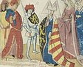

384584465 Imagina of Loon
Blev ca 66 år.

Far:
Mor:
Född:
omkring 1148 Loon, Limburg, Belgien. [1]
Död:
1214-06. [2]
Barn med 384584464 Count Godfrey III of Lovaine & Duke of Brabant (1142? - 1190)
Barn:
Personhistoria
Årtal
Ålder
Händelse
1148?
Födelse omkring 1148 Loon, Limburg, Belgien [1]
1171
Fadern 769168930 Greve Ludvig (Louis) I of Loon dör 1171-08-11 [2]
>1175
Modern 769168931 Agnes von Metz dör mellan 1175 och 1180 [1]
1190
Partnern 384584464 Count Godfrey III of Lovaine & Duke of Brabant dör 1190-08 [2]
1214
Död 1214-06 [2]
Bilder

Källor
[1]
Familypedia
[2]
Wikipedia